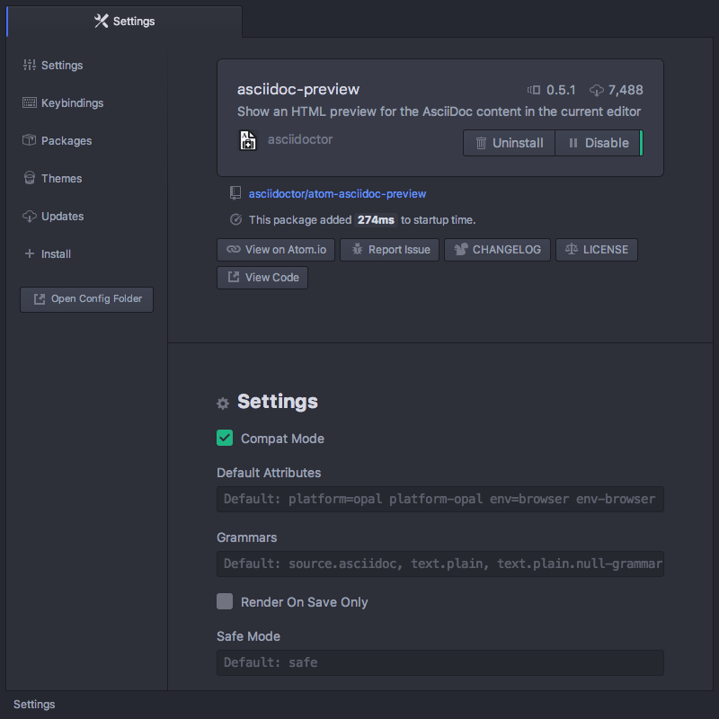
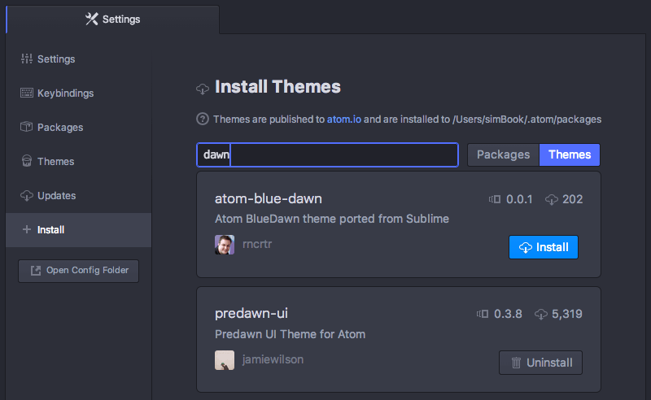
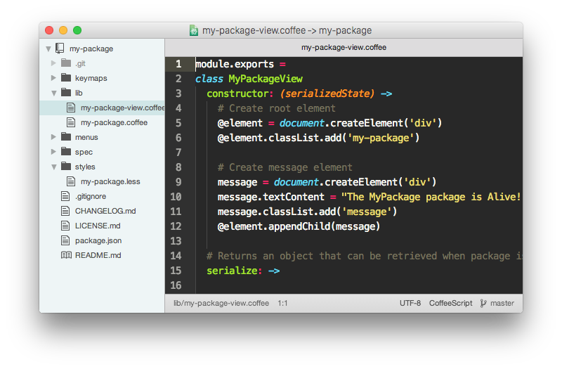

Atom 中的包
首先，让我们从 Atom 的包系统开始讲起。像我们前面提到过的那样，Atom 自己只是一个非常基本的功能核心，它上面承载了许多有用的包，这些包添加新的功能，比如 树视图 和 设置视图。
实际上，Atom 默认自带的所有的功能由超过 90 个包提供。例如，你在首次启动 Atom 时看到的 欢迎界面，拼写检查工具，主题 和 模糊查找工具 都是独立维护的包，它们的代码里使用的 API 你也可以访问。关于这些 API 的更多细节在第三章中。
这意味着所有包都可以变得非常强大，它们可以改变任何东西，从整体界面的外观和感觉，到核心功能的底层操作。
要安装一个新的包，你可以使用已经你非常熟悉的设置视图中的 Install 选项卡。打开设置视图（cmd-,），点击 Install 选项卡，然后在 Install Packages 下面提示 Search Packages 的地方输入你要查找的东西。
在那个界面列出来的是已经发布到 http://atom.io/packages 的包，它是 Atom 包的官方登记处（registry）。在设置视图中进行搜索操作，Atom 会在包登记处搜索并返回所有匹配你搜索的内容。

要安装一个包你要做的就是点击 Install 按钮。点击之后会下载并安装相应的包，然后你的编辑器就拥有那个包提供的功能了。
包的设置
在 Atom 安装了一个包之后，那个包会出现在设置视图的 Packages 选项卡里，与 Atom 预安装的所有包列在一起。如果想找到其中某个包，可以在 Install Packages 标题下方的搜索框里输入关键词来过滤包列表。

点击一个包的 Settings 按钮会弹出这个包特定的设置窗口。在这个窗口里可以查看此包所有的快捷键，可以暂时禁用它，查看它的源码，查看当前版本，报告问题以及卸载它。
如果已安装的任何包有新的版本发布，Atom 会自动检测到。你可以从包特定的设置窗口，或者设置面板里的 Update 选项卡来升级这个包。这能帮助你保持所有已安装的包都是最新的。
Atom 的主题
你也可以在设置视图中，为 Atom 寻找并安装新的 UI 主题或者语法高亮主题。你可以在 Install 选项卡中像搜索新的包那样搜索新的主题。确保你选中了搜索框旁边的 Themes 开关。

点击主题的标题会弹出它在 atom.io 上的简介页面，通常会有主题的截图，可以让你在安装前先看看它是什么样子。
点击 Install 按钮会安装该主题，并且在 Theme 下拉框中列出来。我们在第一章的「Atom 基础」里的更改主题一段里看到过 Theme 下拉框。

命令行
你也可以在命令行中通过 apm 安装主题包。
可以在控制台运行如下命令来检查你是否安装了
apm：$ apm help install正常应该看到
apm install命令的详细信息打印出来。如果没有的话，参考 安装 Atom 一节里给你的系统安装
apm和atom命令的相关说明。
你也可以使用 apm install 命令安装 packages：
apm install <package_name>会安装最新版本。apm install <package_name>@<package_version>会安装指定版本。
比如，apm install emmet@0.1.5 会安装 Emmet 包的 0.1.5 发行版。
你也可以使用 apm 来搜索新的包并安装。运行 apm search 命令可以在包登记处（package registry）搜索想找的包。
$ apm search coffee
Search Results For 'coffee' (5)
├── coffee-trace Add smart trace statements to coffee files with one keypress each. (77 downloads, 3 stars)
├── coffee-navigator Code navigation panel for Coffee Script (557 downloads, 8 stars)
├── atom-compile-coffee This Atom.io Package compiles .coffee Files on save to .js files. (myJavascript.coffee -> myJavascript.js) (349 downloads, 4 stars)
├── coffee-lint CoffeeScript linter (3336 downloads, 18 stars)
└── git-grep `git grep` in atom editor (1224 downloads, 9 stars)
使用 apm view 可以查看指定包的详细信息。
$ apm view git-grep
git-grep
├── 0.7.0
├── git://github.com/mizchi/atom-git-grep
├── `git grep` in atom editor
├── 1224 downloads
└── 9 stars
Run `apm install git-grep` to install this package.